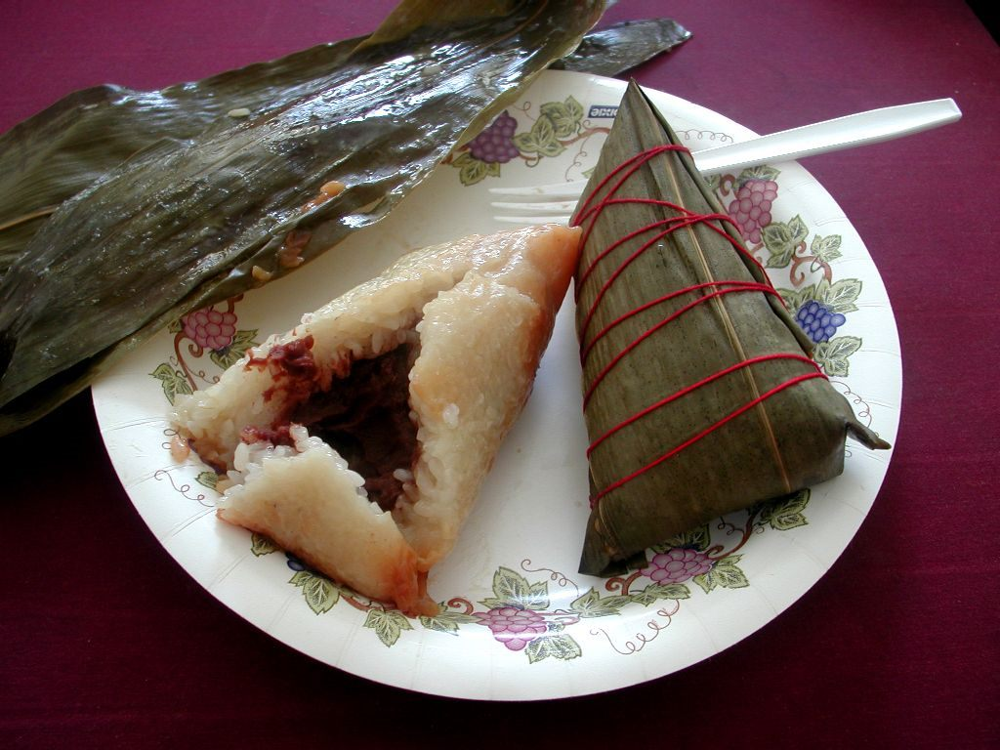

타이난 안핑 노포 새우말이 가게에 바퀴벌레 수백 마리 살포 피해
타이난 안핑의 오래된 새우말이(蝦捲) 가게에 한 남성이 봉지에 담아온 바퀴벌레 수백 마리를 뿌리고 달아났다. 경찰이 수사에 나섰고, 가게는 임시 휴업 후 방역과 청소를 진행했다.
조계현 기자 · 2026.08.31
橋사회

대만 타이난 안핑구의 유명 새우말이 노포에서 한 남성이 봉지에 담아온 바퀴벌레 수백 마리를 매장 안에 뿌리고 달아나는 일이 발생했다. 현장 폐쇄회로 화면이 공개되면서 온라인에서 큰 반응이 일었다.
광고 문의 · 300×250가게 측은 즉시 영업을 중단하고 방역업체를 불러 소독과 청소를 진행했다. 경찰은 피의자 신원 특정과 동기 파악에 나섰다.
노포가 감당하는 위험
안핑 일대는 대만 남부의 대표적인 관광 상권이다. 수십 년 된 노포는 브랜드 자체가 자산이며, 위생 문제와 연결되는 사건은 매출에 직접적인 타격을 준다.
실제 위생 상태와 무관하게 이미지가 손상될 수 있다는 점이 이런 사건의 특징이다. 방역을 마쳐도 소비자의 인식이 회복되기까지는 시간이 걸린다.
법적 성격
대만 법제에서 이런 행위는 재물 손괴나 업무 방해에 해당할 수 있고, 식품 위생과 결부되면 별도의 규정이 적용될 여지도 있다. 구체적 적용은 수사 결과에 달려 있다.
자영업자에게
한국의 화교 자영업자에게도 참고할 만한 대목이 있다. 매장 내 폐쇄회로 화면의 화질과 보관 기간, 보험의 영업 중단 보상 조항이 이런 상황에서 실질적인 차이를 만든다.
아울러 사건 이후의 커뮤니케이션도 중요하다. 방역 조치와 재개점 시점을 투명하게 알리는 것이 신뢰 회복에 도움이 된다는 것이 업계의 통상적인 조언이다.
출처·참고 (사실 확인용 — 본문은 직접 재작성)
· 聯合報 2026-08-30
· 聯合報 2026-08-30